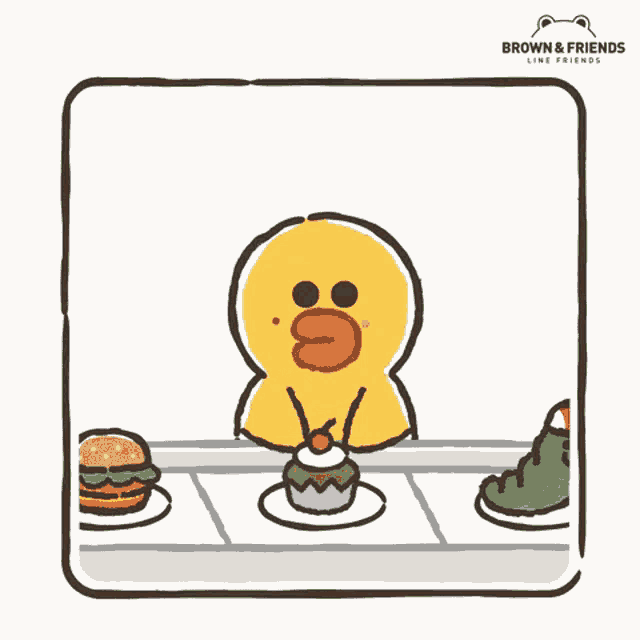
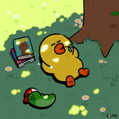
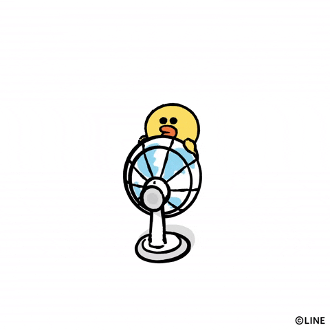
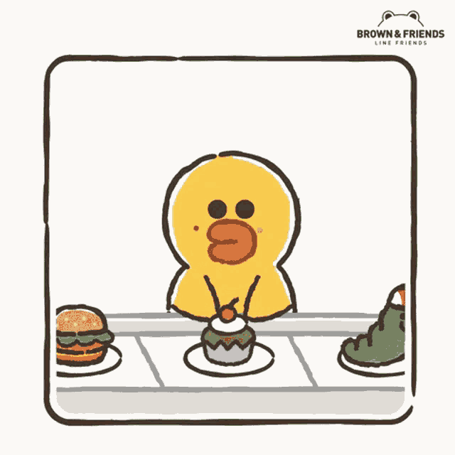
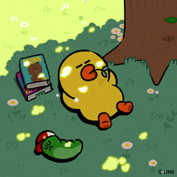
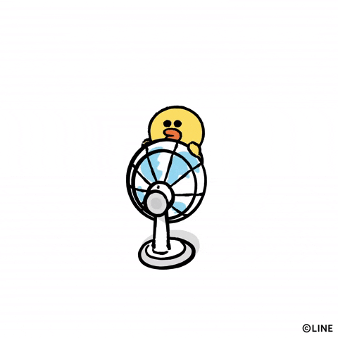
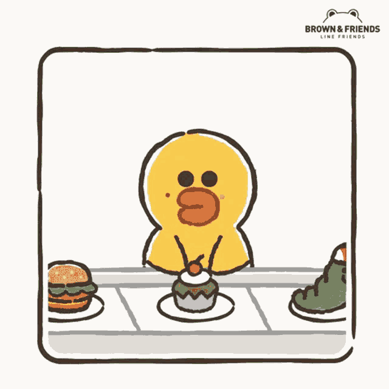
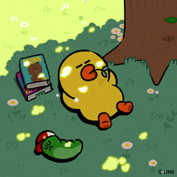
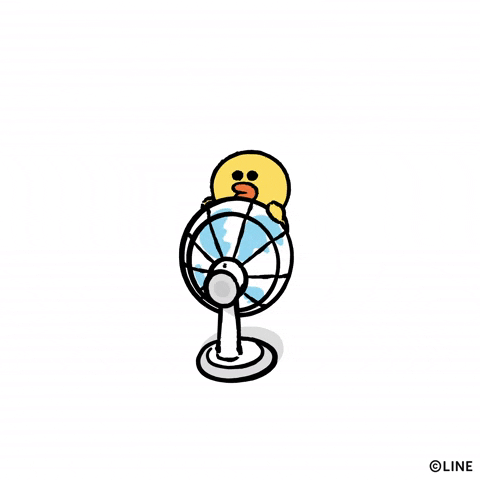
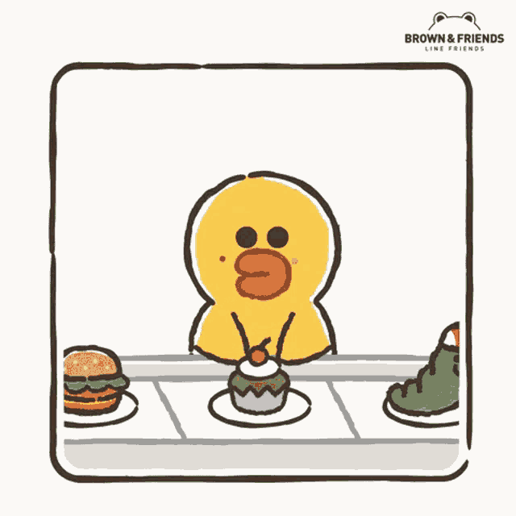
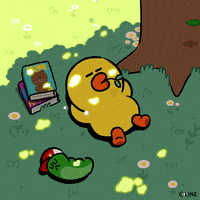
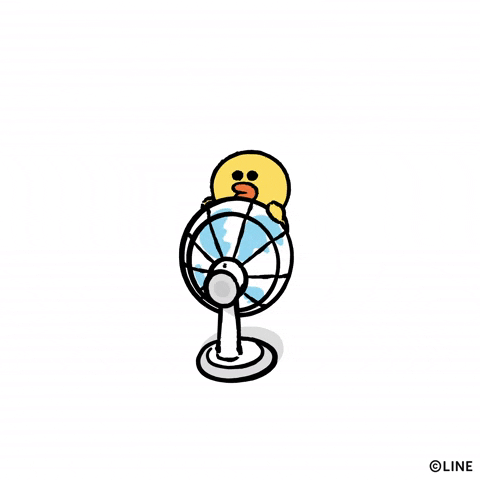
Hi! I'm Darren. I love to analyze things. Some of my interests include: exploring regional foods, classical music, K-pop girl groups, life philosophy, Sally and Choonsik (the characters to the left and right of the page). I often think about how to optimize and improve things, how not to limit myself, to improve on my skills/talents and also shore up my weaknesses. Life is always moving on, so we should too.
Click me!
Fun fact: I can recite 340 digits of pi!
I also love pie. My favorite pies are pecan and french apple.
Growing up, I was always skilled at deductive reasoning. With that said, I was naturally skilled in mathematics, and I eventually pursued a Mathematics degree in college. However, when my graduation drew nearer and nearer, I looked at the path I was pursuing: higher academia, which included getting a doctorate degree. I struggled to find a topic that particularly interested me which I could focus on for such studies. At the time, I could have pursued computer science because it is a clear extension of logic, but I had the perception that it was extremely repetitive. I preferred more theoretical and mental challenges at the time.
On another note, I felt I had personal issues that I wanted to overcome, namely improving my social skills. It was a struggle for me to ask for letters of recommendation to apply to summer research programs. I wasn't able to engage in conversation and ask questions, especially with strangers. That led me to pursue a path in self-employment and sales that eventually helped me to improve my competency in social skills.
Flash forward to now. I have heard over the years about friends or acquaintances that enrolled in a programming bootcamp and ended up working as a programmer in some way. It helped that the income was attractive, especially compared to what I was making being self-employed and having the challenge of managing just about all the aspects of self-employment. I tend to take the difficult path, which I did in an area where my skills were less useful. But now I feel it is the right time to work with my strength in logical reasoning, as well as incorporate the skills I've picked up while being self-employed. I learn better when I have some kind of guidance, and Coding Dojo's platform seemed to be quite professional, so I decided to take a chance to enroll in their software development course.
I can see things from multiple perspectives, as I am very analytical and constantly thinking about the many dimensions of an issue. I see things both on a big picture level as well as the micro-details. Generally, I am pragmatic, so I will find an appropriate solution given the conditions, but at the same time have ideas for improvement if the scope is smaller.
Coding Dojo
Software Development Full-Time
Sep 2023
California State Polytechnic University, Pomona
Bachelor of Science, Mathematics (pure option), cum laude
Mar 2014
email
LinkedIn
GitHub
Instagram
YouTube
Yelp